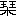

Aozora work 056009
Public-domain Japanese literature
琴の音
ことのね
- First published
- 「文學界 第十二號」文學界雜誌社、1893（明治26）年12月30日
- Aozora release
- Orthography
- 旧字旧仮名
- Edition
- 文學界 第十二號
- Publisher
- Source
- Aozora Bunko card
Learner profile
Difficulty statistics
Reviewscore withheld as an outlier
Model blue-sora-difficulty-v1 · status: outlier
- Words
- 1,900
- Characters
- 3,016
- Sentences
- 12
- Average sentence
- 158.3 words
- Unique words
- 672
- Unique kanji
- 408
- Single-use words
- 463 · 68.9%
- Single-use kanji
- 239
- Lexical rarity
- 32.8 · weight 55%
- Kanji rarity
- 63.9 · weight 25%
- Sentence complexity
- 100.0 · weight 20%
- Lexical surprisal
- 2.985
- Kanji surprisal
- 3.098
Online reader
Read here
上#
空に月日のかはる光りなく、春さく花のゝどけさは浮世萬人おなじかるべきを、梢のあらし此處にばかり騷ぐか、あはれ罪なき身ひとつを枝葉ちりちりの不運に、むごや十四年が春秋を雨にうたれ風にふかれ、わづかに殘る玉の緒の我れとくやしき境界にたゞよふ子あり。
母は此子が四つの歳、みづから家を出でゝ我れ一人苦をのがれんとにもあらねど、かたむきゆく家運のかへし難きを知る實家の親々が、斯く甲斐性なき男に一生をまかせて、涙のうちに送らせん事いとほし、乳房の別れの愁らしとても、子は只一人なるぞかしと、分別らしき異見を女子ごゝろの淺ましき耳にさゝやかれて、良人には心の殘るべきやうもあらざりしかど、我が子の可愛きに引かれては、此子の親なる人をかゝる中に捨てゝ、我が立さらん後はと、流石に血をはく思ひもありしが、親々の意見は漸く義理の樣にからまりて、弱き心のをしきらんに難く、霜ばしら今たふれぬべきを知りつゝ、家も此子も、此子の親をも捨てゝ出でぬ。
父は一人ゆきたることもあり、此子を抱きて行きたることもあり、これを突きつけて戻りたることもあり、我れは此まゝ朽はてぬとも、せめては此子を世に出したきに、いかにもして今一たび戻りくれよ、長くとには非ず今五年がほど、これに物ごゝろのつきぬべきまでと、頼みつすかしつ歎げきけるが、さりとも子故に闇なるは母親の常ぞ、やがては戀しさに堪えがたく、我れと佗して歸りぬべきものをと覺束なきを頼みて、十五日は如何に、二十日は如何に、今日こそは明日こそはと待つ日空しく過ぎて、はては尋ね行きたりとて、面を合はする事もなく、乳母にや出けん、人の妻にや成りけん、百年の契りは誠に空しくなりぬ。
斯くて半年を經たりし後は、父もむかしの父に非ずなりぬ、見かぎりて出にし妻を、あはれ賢こしと世の人ほめものにして、打すてられし親子の身に哀れをかくる人は少なかりき、夫れも道理、胸にたゝまるもや／＼の雲の、しばし晴るゝはこれぞとばかり、飮むほどに醉ふほどに、人の本性はいよいよ暗くなりて、つのりゆく我意の何處にか容れらるべき、其年の師走には親子が身二つを包むものも無く、ましてや雨露をしのがん軒もなく成りぬ、されども父の有けるほどは、頼む大樹のかげと仰ぎて、よしや木ちんの宿に蒲團はうすくとも、温かき情の身にしみし事もありしを、夫すら十歳と指をるほどもなく、一とせ何やらの祝ひに或る富豪の、かゞみを※［＃「抜」の「友」に代えて「丿／友」、U+39DE、13-上-7］いていざと並べし振舞の酒を、うまし天の美祿、これを

りに我れも極樂へと心にや定めけん、飢へたる腹にしたゝかものして、歸るや御濠の松の下かげ、世にあさましき終りを爲しける後は、來よかし此處へ、我れ拾ひあげて人にせんと招くもなければ、我れから願ひて人に成らん望みもなく、はじめは浮世に父母ある人うらやましく、我れも一人は母ありけり、今は何處に如何なることをしてと、そゞろに戀しきこともありしが、父が終りの悲しきを見るにも、我が渡邊の家の末をおもふにも、母が處業は惡魔に似たりとさへ恨まれける。父は無きか、母は如何にと問はるゝ毎に、袖のぬれしは昔しなりけり、浮世に情なく人の心に誠なきものと思ひさだめてよりは、生中あはれをかくる人も、我れを嘲けるやうに覺えて面にくし、いでや、つらからば一筋につらかれ、とてもかくても憂身のはてはとねぢけゆく心に、神も佛も敵とおもへば、恨みは誰れに訴へん、漸々尋常ならぬ道に尋常ならぬ思ひを馳せけり。
おどろに亂れし髮のひまより、人を射るやうなる眼のきらきらと光るほかは、垢にまみれし面かげの、何處にはいかならん好き處ありとも、凡人の目に好しと見ゆべきかは、恐ろしく氣味惡く油斷ならぬ小僧と指さゝるゝはては、警察にさへ睨まれて、此處の祭禮かしこの縁日、人山きづくが中に忌はしき疑を受けつ、口をしや剪兒よ盜人と萬人にわめかれし事もありき。
人の眼はくもりたるものにて、耳は千里の外までも聞くか、あやまり傅へたる事は再度きえず、渡邊の金吾は誠の盜賊に成りぬ、やがては明治の何と肩がきのつくべきほど、おそろしがらるゝ身かへりて恐ろしく、此處を離れて知らぬ土地に走らんと思ひたる事もあり、恨みに堪えかねては死なばやと思ひたる事もあり、幾度水のおもてに臨みて、これを限りと眺めたる事もありしが、易きに似て難きものは死なりけり。
捨てはてし身にも猶衣食のわづらひあれば、晝は處となくさまよひて何となく使はれ、夜は一處不住の宿りに、かくても夢は結びつゝ、日一日とたゞよひにたゞよひて、過しゆくほどに、脊たけと共にのびゆくは、ねじけたる心なるべし。
下#
御行の松に吹かぜ音さびて、根岸田甫に晩稻かりほす頃、あのあたりに森江しづと呼ぶ女あるじの家を、うさんらしき乞食小僧の目にかけつゝ、怪しげなる素振あるよし、婢女ども氣味わるがりてき合ひしが、門の扉の明くれに用心するまでもなく、垣に枝だれし柿の實ひとつ、事もなくして一月あまりも過ぎぬるに、何時となく忘れて噂も出ず成しが、主の女が敏き耳には、少しあやしと聞かるゝ事あり、秋雨しと／＼と降りて物あはれなる夜、ともし火のもとに獨り手馴れの琴を友として、あはれに淋しき調べを弄びつゝ、上野の森に聞えいづる鐘の、さりとは更けぬるかなと、さしおきて聞けば、軒ばを傳ふ雨しだりのほかに、梢をゆする秋風の外に、物のけはいの聞ゆる樣なること度かさなりぬ。
軒ばに高き一もと松、誰れに操の獨栖ぞと問はゞ、斯道にと答へんつま琴の優しき音色に一身を投げ入れて、思ひをひそめしは幾とせか取る年は十九、姿は風にもたへぬ柳の糸の、細々と弱げなれども、爪箱とりて居ずまゐを改たむる時は、塵のうきよの紛雜も何ぞ、松風かよふ糸の上には、山姫きたりて手やそふらん、夢も現も此うちにとほゝ笑みて、雨にも風にも、はたゝめく雷電にも、悠然として餘念なし。
頃は神無月はつ霜この頃ぞ降りて、紅葉の上に照る月の、誰が砥にかけて磨きいだしけん、老女が化粧のたとへは凄し、天下一面くもりなき影の、照らすらん大厦も高樓も、破屋の板間の犬の臥床も、さては埋もれ水人に捨てられて、蘆のかれ葉に霜のみ冴ゆる古宅の池も、筧のおとなひ心細き山した庵も、田のもの案山子も小溝の流れも、須磨も明石も松島も、ひとつ光りのうちに包みて、清きは清きにしたがひ、濁れるは濁れるまに／＼、八面玲瓏一點無私のおもかげに添ひて、澄のぼる琴のね何處までゆくらん、うつくしく面白く、清く尊く、さながら天上の樂にも似たりけり。
お靜が琴のねは此月此日うき世に人一人生みぬ、春秋十四年雨つゆに打たれて、ねぢけゆく心は巖のやうにかたく、射る矢も此處にたちがたき身の、果は臭骸を野山にさらして、父が末路の哀れやまなぶらん、さらずば惡名を路傍につたへて、腰に鎖のあさましき世や送るらん、さても心の奧にひそまりし優しさは、三更月下の琴聲に和して、こぼれ初めぬる涙、露の玉か、玉ならば趙氏が城のいくつにも替へがたし、戀か情か、其人の姿をも知らざりき、わづかに洩れ出る柴がきごしの聲に、うれしといふ事も覺えぬ、恥かしさも知りぬ、かねては惡魔と恨らみたる母の懷かしさゝへ身にしみて、金吾は今さら此世のすて難きを知りぬ、月はいよ／＼冴ゆる夜の垣の菊の香たもとに滿ちて、吹くや夜あらし心の雲を拂らへば、又かきたつる琴のねの、あはれ百年の友とや成るらん、百年の悶へをや殘すらん、金吾はこれより百花爛の世にいでぬ
Source and edition notes
底本：「文學界 第十二號」文學界雜誌社
1893（明治26）年12月30日発行
初出：「文學界 第十二號」文學界雜誌社
1893（明治26）年12月30日発行
※底本掲載時の署名は、「一葉」です。
※変体仮名は、通常の仮名で入力しました。
入力：万波通彦
校正：Juki
2013年11月8日作成
2013年12月23日修正
青空文庫作成ファイル：
このファイルは、インターネットの図書館、青空文庫（http://www.aozora.gr.jp/）で作られました。入力、校正、制作にあたったのは、ボランティアの皆さんです。